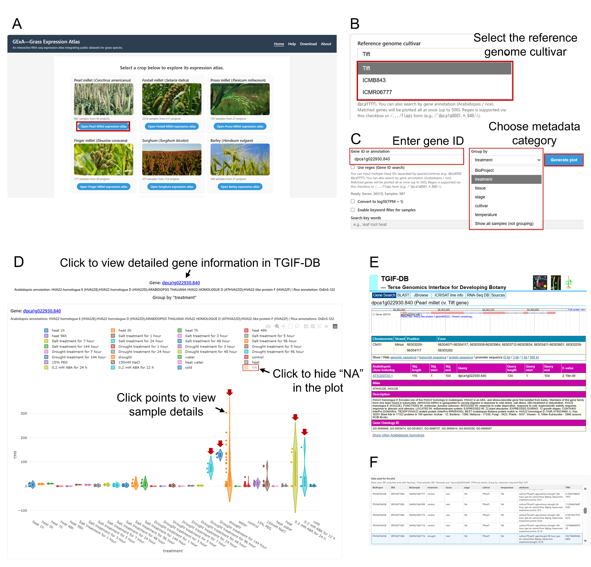
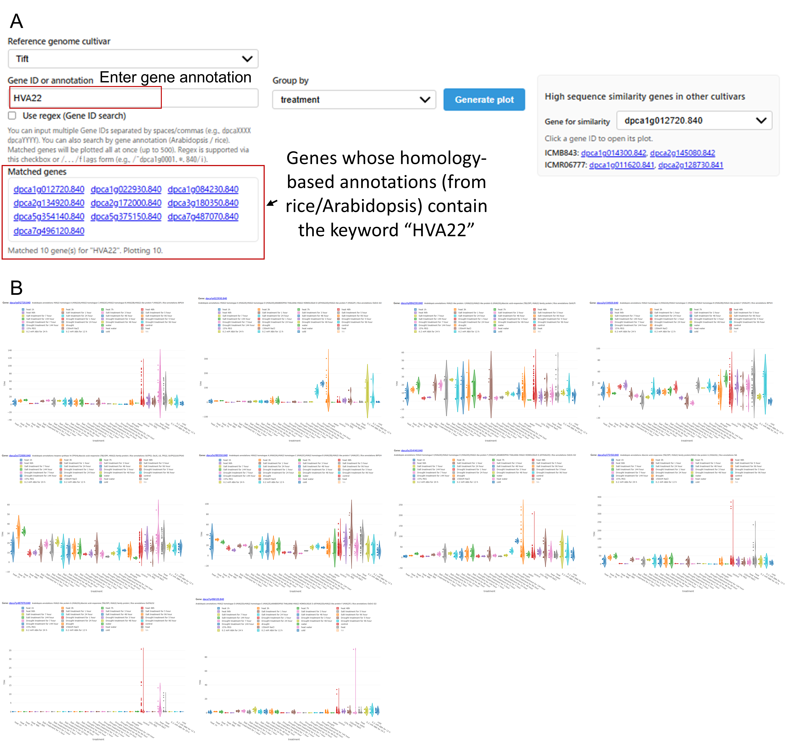

Learn how to search genes and visualize TPM distributions with flexible grouping and filtering.
Instructions for how to use the RNA-seq database (e.g., Pearl millet) to search genes and visualize their expression profiles across samples and conditions.
Enter a gene identifier such as dpcaXXXX. You can input multiple Gene IDs separated by spaces or commas.
Type keywords (e.g., a protein name). Genes whose homology-based annotations (from rice/Arabidopsis BLASTP searches) contain the keyword will be listed and plotted (up to 500 genes).
Choose Reference genome cultivar, input Gene ID or annotation,
set Group by, and configure options such as
Use regex, Convert to log10(TPM + 1),
and the sample keyword filter.
Expression is shown as an interactive Plotly violin plot. Use the Plotly toolbar (zoom/pan/reset/download as PNG) directly on the figure.
The table shows the sample metadata and the expression value (TPM, and optionally log-transformed). Clicking a point in the plot highlights the corresponding row.
For Pearl millet, when the reference genome cultivar is set, a panel lists high-similarity genes in other cultivars and lets you open their expression plots.
Reference genome cultivar dropdown.
The page will automatically move to the corresponding dataset/page.
Use regex (Gene ID search) or input a regex using /.../flags
(e.g., /^dpca1g000*.840/i).
Group by
(e.g., tissue, treatment, stage, cultivar,
or Show all samples (not grouping)).
Convert to log10(TPM + 1).
Generate plot. The plot and table will update.
dpcaXXXX dpcaYYYY). Each gene will be plotted.
Enable Convert to log10(TPM + 1) to reduce the effect of highly expressed outliers.
Both the plot axis and the data table will reflect this choice.
Enable Enable keyword filter for samples, then type keywords into Search key words.
Samples are kept only if their metadata contains all keywords (AND search; space-separated).
Press Enter to redraw the plot.
Gene for table.
On the Pearl millet page, when the reference genome cultivar is set, the High sequence similarity genes in other cultivars panel appears. After plotting a gene, you can pick the base gene (if multiple genes are plotted) and the panel lists corresponding high-similarity genes in other cultivars. Clicking a listed gene to plot it.
Generate plot again.How GExA can be used to query genes, visualize expression profiles, inspect sample-level metadata, and compare candidate genes identified by homology-based annotation search.
This example examines the pearl millet gene dpca1g022930.840. It is the closest homolog of rice HVA22 (LOC_Os11g30500), and it has been
reported as a dehydration- and abscisic acid (ABA)-responsive gene in pearl millet (Qazi et al., 2025).

dpca1g022930.840 is a Gene ID from the Tift genome,
choose Tift as the reference genome cultivar (Fig. 1B).
dpca1g022930.840 in the Gene ID field. To examine whether the gene is induced under specific conditions,
select treatment as the metadata category for grouping (Fig. 1C).
NA (unavailable or unassignable metadata) can be hidden when they are not relevant to the current comparison (Fig. 1D).
GExA can also be used when a specific Gene ID is not known. By entering an annotation keyword such as
HVA22, users can identify genes whose homology-based annotations, derived from rice and/or
Arabidopsis genes, contain the keyword. And then their expression profiles are visualized on the same page.

HVA22, and list genes whose homology-based rice/Arabidopsis annotations
contain the keyword. (B) Expression patterns of the matched genes. These plots are shown on the same page for direct comparison.
HVA22 in the annotation keyword field and click the Generate plot button (Fig. 2A).
HVA22 in the associated annotation or gene name (Fig. 2A).